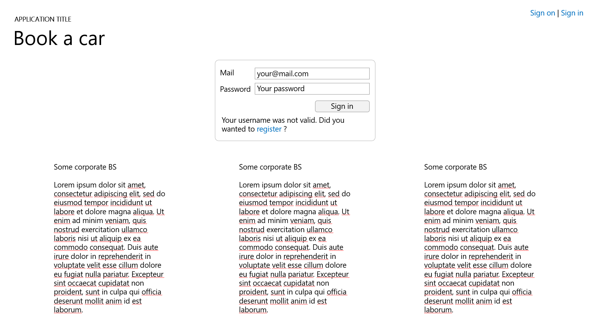

Maquette informatique
Présentation
- Jean-Christophe Chalté
- Développeur depuis 8 ans
- Consultant indépendant depuis 4 ans
- Contacts :
- Mail : jc.chalte@processis.fr
- http://github.com/jcchalte
Cours
- Maquettage
- SQL Server
- Technologies C#/Asp.Net
- Jeu de tests des programmes
- Projet de développement
Déroulement
- Un peu de théorie
- Pas mal de pratique
- Sujet de réflexion entre cours
- Tour de table
- Projet final
- Seule notation de tous les cours
- Projet important en investissement temps
- Prenez de l'avance !
Maquettage
- En faire moins ? mieux ?
- Laisser faire les autres...
- Moins s'embêter ?
“Finalement c'est un peu ça le but dans la vie nan? Réussir à rien foutre...”
GIT
ça fait le café...
Système de gestion de version
- Concurrent Versions System : CVS
- Git, SVN, CVS, Perforce, TFS...
- Gère plusieurs problématiques
- Versioning
“Comment c'était hier soir ? ça marchait à ce moment là...”
“Pourquoi j'ai fait ça il y a 3 ans ?”
“Arrête tout, c'est ultra urgent !” - Le marketing
-
Concurrent
“Qui a la dernière version ?”
“Quel est le c** qui a fait ça ?”
- Versioning
Repository local
- Contrôle de code source décentralisé
- Se base sur le système de fichier de l'OS
- Chaque repository est par nature indépendant
- Un repository : un dossier sur votre PC
- Se manipule en ligne de commande (++) ou via des logiciels adaptés
git Bash / git CMD / Tortoise GitInitialisation
- Créer un repository vide :
- Dans un répertoire vierge
git init -
Partir d'un repository existant
- Créera un sous-dossier
git clone https://github.com/jcchalte/PresentationsCCI.git
Commandes pratiques
gitgit macommande -hgit macommande --helpgit statusgit add .git commit -a -m '...'git checkout --forceGithub
- Service en ligne gratuit (public) ou payant (privé)
- Création de repositories git
- Gestion d'outils de suivi de projet
- Bug tracking
- Code reviews
- Droits d'accès etc.
Manipulation de repository distant
git pushgit fetchgit pullgit remote -vTravail collaboratif 1/2
- Dépôt/Récupération d'un repository commun (souvent en ligne)
- Lors de la récupération, des conflits peuvent apparaitre
- Conflits
- ex : modifications d'une même ligne d'un même fichier
- Utilisez TortoiseGIT pour gérer les conflits
- Complexe à gérer
Travail collaboratif 2/2
- Commitez souvent !
- Effectuez un dépôt lorsqu'une fonctionnalité est terminée
- Peut contenir plusieurs commits
- Séparez bien le travail/les fichiers
- Utilisez des branches
- Persévérez dans la gestion des conflits
Aller plus loin
- Laissez passer la nuit :)
- Remise de fichier : http://bit.ly/Git-remisage
- Gestion des branches : http://bit.ly/GitModel
- Gestion des branches (FR) : http://bit.ly/GitModelFR
- Un cours openClassRoom sur le sujet qui ira très vite : http://bit.ly/OC-git
Maquettage
Ou comment répondre à tout et à n'importe quoi
Tour de table
- Précédent cours
- des questions, éclaircissements ?
- Conflits ?
- gitignore ? Remisage ? Branches ?
Analyste-Développeur
- On oublie facilement l'analyse
- Intérêt personnel dans la technicité et le résultat
- L'analyse est :
- souvent demandée (fait partie de la mission)
- souvent rébarbative
- peut-être intéressante, ludique
- peut massivement simplifier la vie du développeur
- Autant s'en faire un allié
En quoi l'analyse peut nous aider ?
- Ce qui est long et complexe, ce n'est pas l'écriture mais la modification
- Avoir une idée claire permet
- de partir dans la bonne direction
- de mieux découper le travail
- de mieux se protéger
- A la fin d'une analyse, on sait ce que l'on doit réaliser, et comment le réaliser
Différents types d'analyse
- Waterfall
- Cycle en V
- Agile
Waterfall
- Analyse des besoins avec le client (Requirement)
- Définitions des livrables, spécifications des fonctionnalités (Design)
- Établissement d’un budget et d’un échéancier (Planning)
- Début du cycle de développement: création d’une première fonctionnalité (Implementation)
- Validation et correction (Verification)
- Maintenance de cette fonctionnalité au fil du temps (Maintenance)
Cycle en V

Développement Agile
- Boucles de développement itératif
- ...incrémental
- ...et adaptatif
- Manifeste Agile
- Plusieurs manières de faire de l'agile
- Extreme Programming (XP)
- Scrum
- ...
Cycles de développements
- Quelque soit la méthode, le sujet est complexe
- Aucune méthode n'est parfaite dans la pratique
- Compromis
- Surtout si l'on prends en compte l'humain
Des complexités communes
- Recueillir le besoin client
- qui parle son propre langage
- qui n'est pas omniscient, ni même constant
- Traduire ce besoin en programme informatique
- Besoin de gérer le changement...
- ... tout en sachant on l'on va
- Notamment pour ne pas se fermer des portes
- Approches hybrides
Maquettage
- Réalisation d'une maquette graphique de l'application
- Sert à pouvoir dialoguer avec le client
- Vocabulaire commun
- Exploration du domaine
- Evite des erreurs d'interface utilisateur
- Sert au développeur pour connaître l'objectif
- Même sur itérations courtes
Maquettage
- Plusieurs manières de faire du maquettage

Pourquoi il ne faut pas faire trop bien...
- Nécessite trop de compétences variées
- Trop long
- rappel : support de dialogue
- Complexe au changement
- Dévie la discussion sur des sujets annexes comme le design
Mockup/Wireframe
- Représentation simplifiée du résultat final
- Se concentre sur l'expérience utilisateur (UX) plus que sur l'interface
utilisateur (UI)
- Analyste plutôt que designer
- Compréhensible par tous
- Extrêmement efficace pour la discussion
- Surtout si dynamique
- Pas exact, mais vraisemblable
- Utilisation d'outils appropriés
Ergonomie web
- Disclaimer : je ne suis pas ergonome
- Quelques règles de base
- Rendre logique le rangement du site
- Pas de superflu
- Cohérent
- En interne
- Avec les usages courants
- Faire extrêmement attention aux mots choisis
- Pensez Mobile, et accessibilité
Conclusion
- Pragmatisme et prise de recul
- Apprenez/réfléchissez/optimisez votre métier comme vous réfléchissez votre technique
- La prise de recul permet une meilleure compréhension du phénomène
- Des outils simples permettent de répondre pragmatiquement à des problèmes
- Pas de solution parfaite, mais des meilleurs compromis
Aller plus loin
- Ergonomie : http://bit.ly/principesdedesign
- Balsamiq, Moqups
- Mind Mapping
- Psychologie appliquée ;-)
HTML/CSS
- OpenClassRoom (faire parties 1 et 2) : http://bit.ly/OCR_HTML
- Bootstrap : http://bit.ly/DebuterBootstrap